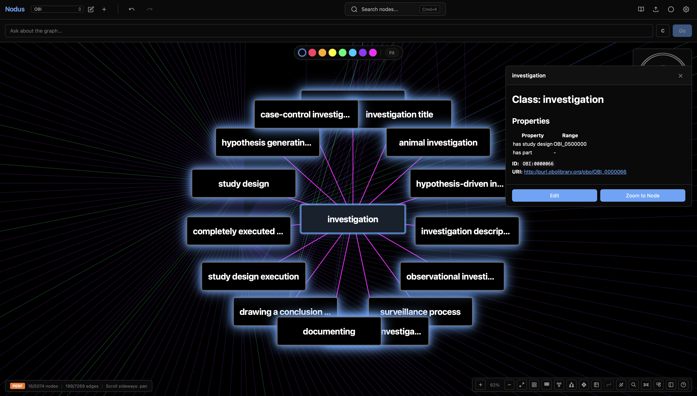
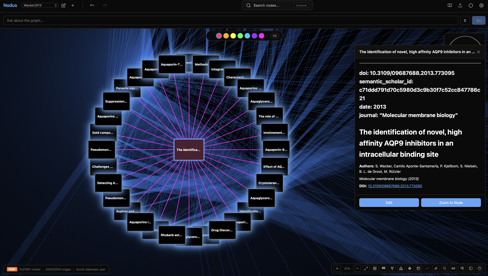
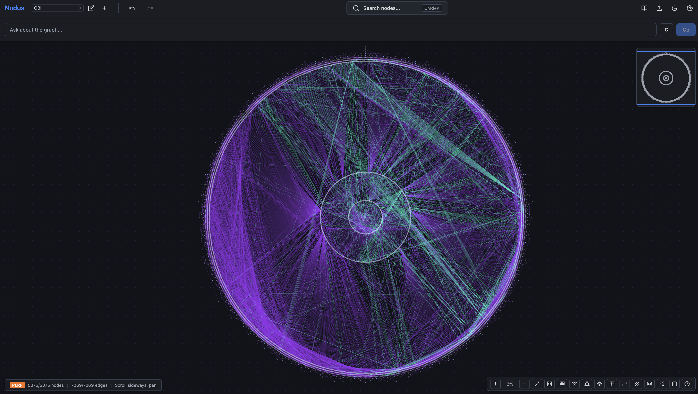
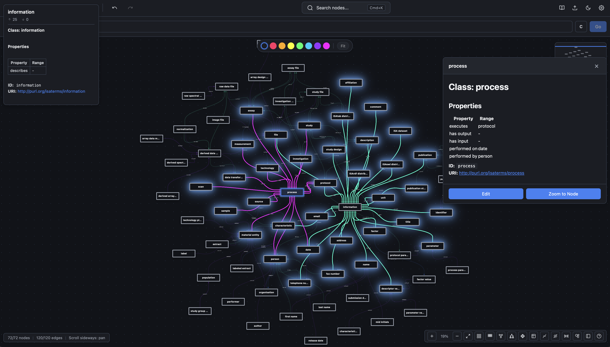
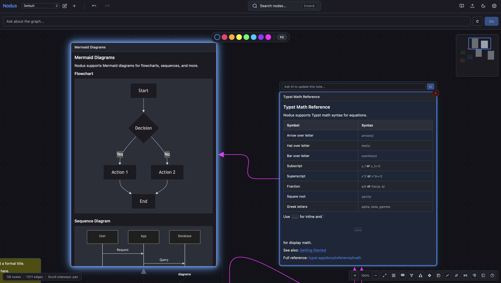
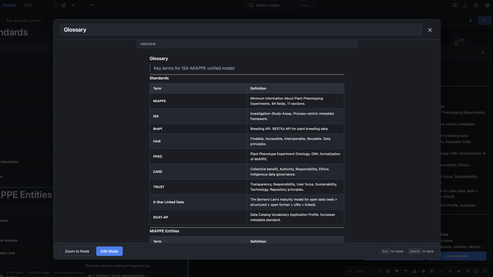
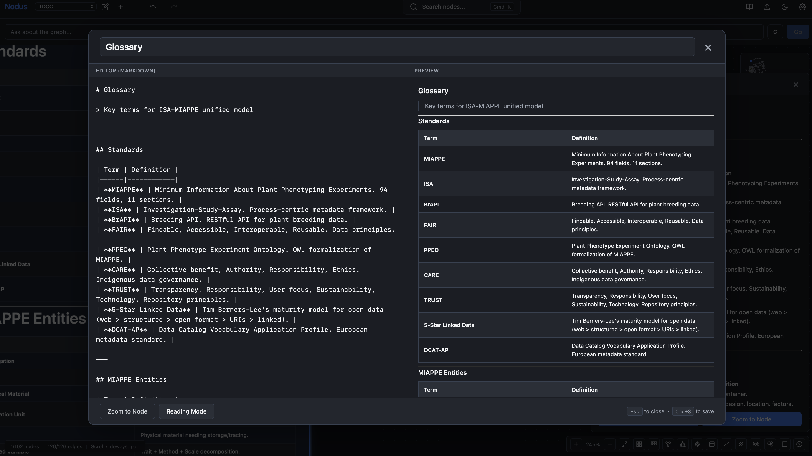

01
Single canvas
The document and the whiteboard are one thing. No embeds, no context switching. Connect ideas visually with arrows and typed relationships.
Capabilities
The document and the whiteboard are one thing. No embeds, no context switching. Connect ideas visually with arrows and typed relationships.
Sub-second rendering with modern Typst syntax. Write equations naturally, without waiting on a LaTeX toolchain.
Bi-directional sync with your vault. Your markdown files stay exactly as they are, so both tools keep working.
Your data never leaves the device unless you choose to move it. No cloud account, and the whole application works offline.
Run local models through Ollama or connect a cloud provider. The agent organises, connects and researches inside the graph you already have.
PDF, Typst source or plain Markdown. Nothing is locked in, because the files were yours to begin with.
Plates







Free and open source, for macOS, Windows and Linux.
Disclaimer: this software is provided as-is, without warranty. The author is not liable for data loss, API costs or other damages.